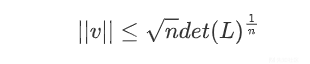
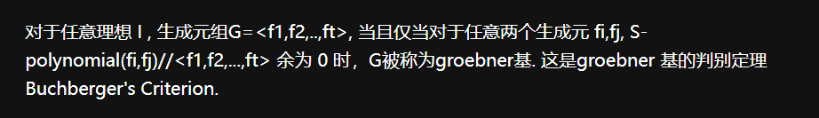
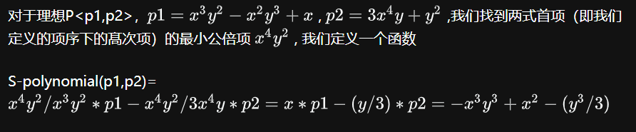
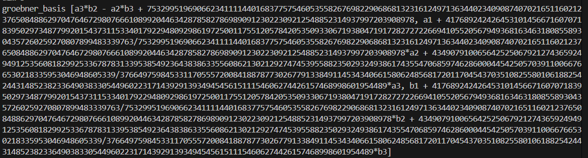
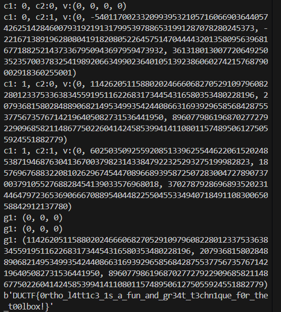
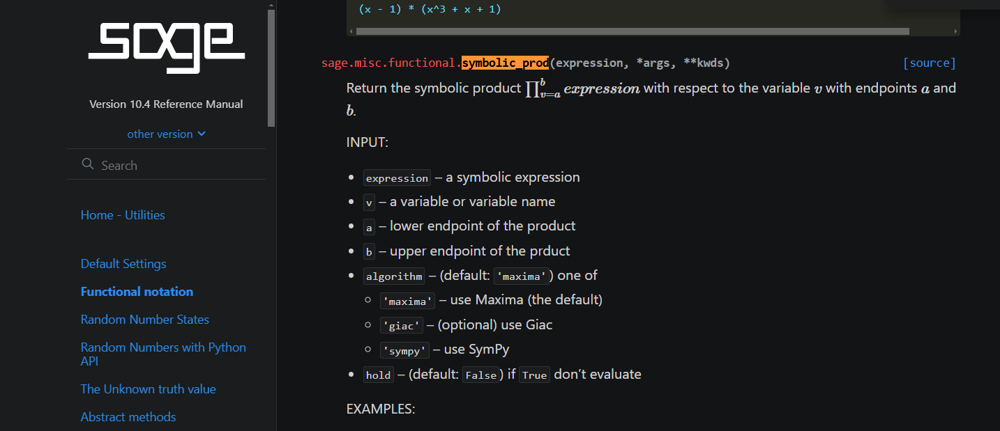
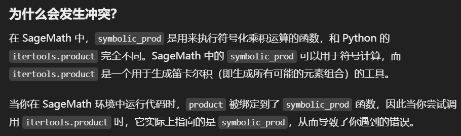
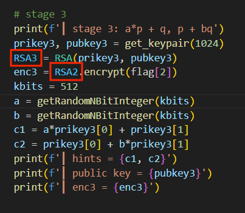

WP-[2024.11强网初赛]apbq
apbq
三段 RSA ，第一段简单，第二段原题，第三段纯纯nt
第一段
第一段是一个已知 \(p+q\) 的 RSA ，很简单
1 | from Crypto.Util.number import * |
第二段
第二段是 DownUnderCTF 2023 原题，这里记录一下学习过程
apbq rsa i
原题是 apbq rsa ii ，是在 apbq rsa i 的基础上
apbq rsa i 题目如下
1 | from Crypto.Util.number import getPrime, bytes_to_long |
给了两个等式 \[ \begin{cases} h_1=a_1p+b_1q\\ h_2=a_2p+b_2q \end{cases} \] 消去\(p\) \[ a_2h_1-a_1h_2=(a_2b_1-a_1b_2)q \] 于是 \(a_2h_1-a_1h_2\) 是 \(q\) 的倍数，于是 \(q\) 是 \(a_2h_1-a_1h_2\) 和 \(n\) 的 \(gcd\)，而a1和a2的位数很小，于是可以爆破
1 | from itertools import * |
apbq rsa ii
接下来是 apbq rsa ii ，题目如下
1 | from Crypto.Util.number import getPrime, bytes_to_long |
和上一道差不多，区别在于多了一个提示，同时a的位数变大了，现在和b一样
2024.11.7 实在看不懂，只能先把大佬文章先留下来
初步推导
和上一题差不多的推导，由三个等式可以消去 \(p\) 和 \(q\) 两个变量 \[ a_1a_3b_2h_1-a_1a_2b_3h_1-a_1a_3b_1h_2+a_1^2b_3h_2+a_1a_2b_1h_3-a_1^2b_2h_3=0 \] 提取公因子 \(a_1\) \[ (a_3b_2-a_2b_3)h_1+(a_1b_3-a_3b_1)h_2+(a_2b_1-a_1b_2)h_3=0 \] 于是构造格 \[ \begin{pmatrix} a_3b_2-a_2b_3 & a_1b_3-a_3b_1 & a_2b_1-a_1b_2 \end{pmatrix} \begin{pmatrix} h_1 & 1 & 0 &0 \\\\ h_2 & 0 & 1 & 0 \\\\ h_3 & 0 & 0 & 1 \end{pmatrix} = \begin{pmatrix} 0 & a_3b_2-a_2b_3 & a_1b_3-a_3b_1 & a_2b_1-a_1b_2 \end{pmatrix} \] 做一下范数平衡，验证Hermite定理

\[ ||v||=\sqrt{0^2+(a_3b_2-a_2b_3)^2+(a_1b_3-a_3b_1)^2+(a_2b_1-a_1b_2)^2} \] 约为 \(312*2=624\) 位
非方阵的行列式见笔记另一篇笔记 Lattice \[ det(L)=\sqrt{1+\sum_{i = 0}^{n}\alpha_i^2}=\sqrt{1+h_1^2+h_2^2+h_3^2} \] 约为 \(h_1\) 的位数，\(1336\) 位，所以 \(\sqrt {n}det(L)^\frac{1}{n}\) 约为 \(1336/4\approx334\) 位，不满足条件，于是第一列乘 \(n\)（题目给的 \(n\)，不是维数）
乘完之后，\(||v||\) 还是 \(624\) 位，\(\sqrt {n}det(L)^\frac{1}{n}\) 增大到 \((1336+2048)/4=846\) 位，满足要求
系数调整
取格出来的第一个行向量，就是我们要的 \[ \begin{pmatrix}0 & a_3b_2-a_2b_3 & a_1b_3-a_3b_1 & a_2b_1-a_1b_2 \end{pmatrix} \] 但看其它师傅的博客，还有正负号需要调整
1 | _, t, u, v = L[0] |
groebner basis
现在得到了理想 \[ (a3s * b2s - a2s * b3s - t, a3s * b1s - a1s * b3s + u, a2s * b1s - a1s * b2s - v) \] 做 groebner_basis...
额额，什么是 groebner_basis？
先参考以下几篇文章，学习了一下groebner basis
https://www.cnblogs.com/ZimaBlue/articles/16927952.html
https://zhuanlan.zhihu.com/p/262906557
groebner basis定义即

其中，S-polynomial函数的定义为

即 groebner basis
（本身是一个生成元组）中的生成元均满足：对任意两个生成元，二者首项的最小公倍项除以各自的首项后乘以自己本身，得到的项相减，也就是S-polynomial函数的结果，能够整除
groebner basis 自己
我自己的认识是：
通过做 groebner basis ，可以将复杂的等式按照变量进行剥离，得到更“干净”的关系
在本题中，对理想 I 做 groebner basis 后，可以得到三个更简单的等式，其中第二个等式是一个 \(k_1a_1+k_2a_2+k_3a_3=0\) 的简单等式，第三个等式是一个 \(k_1b_1+k_2b_2+k_3b_3=0\) 的简单等式

后续
接下来，用这两个等式，我们再LLL规一次即可 \[ \begin{pmatrix} a_1 & a_2 &a_3 \end{pmatrix} \begin{pmatrix} k_1 & 1 & 0 &0 \\\\ k_2 & 0 & 1 & 0 \\\\ k_3 & 0 & 0 & 1\end{pmatrix} = \begin{pmatrix}0 & a_1 & a_2 & a_3\end{pmatrix} \] 对\(b_1、b_2、b_3\)也同理
这个格满足Hermite定理，能直接规出来结果，用规出来的 \(a_1、a_2和a_3\) ，接下来用 apbq rsa i 的思路解即可
2024.11.13 原wp部分如下，其中的线性组合我没理解是干啥的，组合的系数范围也不知道怎么定的，反正我规出来的结果可以直接用
1 | xs = [] |
同时，我还做了验证
1 | for c1, c2 in itertools.product((0, 1), repeat=2): |
可以根据下面的打印调试信息知道，遍历出来的结果，系数其实就是1和0，也就是直接用规出来的结果

我自己调整过的exp如下
1 | import itertools |
原exp有几个地方需要注意，一个是下面这个调试打印的地方
1 | for v in L: |
要改成
1 | for v in L: |
然后是用product函数遍历的时候会报错'int' object is not iterable sage
1 | for sign in product((-1,1), repeat=3): |
这个问题困扰我挺久的，我把数据类型换来换去都不对，后来查看了product的类型，也是function，但万万没想到原来这里的function不是预期的function
1 | <function symbolic_prod at 0x7f2ea9d2f8b0> |
可以看到，product函数已经变成了symbolic_prod，而这是一个sage里的函数

因为这里本意是使用python里的product函数，但这是一个sage脚本，在sage环境里跑的时候，会使用sage里面的同名函数，所以会报参数错误

解决办法很简单，在导入product函数的时候换个名字就行
1 | from itertools import product as it_product |
然后后面在使用product的地方修改为
1 | for sign in it_product((-1,1), repeat=3): |
或者是指定一下使用的是itertools库中的product函数
1 | for sign in itertools.product((-1,1), repeat=3): |
这样的话导入的时候就要改成
1 | import itertools |
另一版 exp
1 | import itertools |
其实思路差不多，这段里面的线性组合也可以去掉
1 | import itertools |
回到这道题目
这道题唯一的区别就是3组变成了100组
1、2与任一其它等式联立得到 \[ (a_ib_2-a_2b_i)h_1+(a_1b_i-a_ib_1)h_2+(a_2b_1-a_1b_2)h_i=0 \] 构造格如下 \[ \begin{pmatrix} a_2b_1-a_1b_2 & a_3b_2-a_2b_3 & a_1b_3-a_3b_1 & a_4b_2-a_2b_4 & a_1b_4-a_4b_1 & \dots & a_{100}b_2-a_2b_{100} & a_1b_{100}-a_{100}b_1 \end{pmatrix} \begin{pmatrix} 1 & 0 & 0 & 0 & 0 & 0 & \dots & 0 & 0 & h_3 & h_4 & h_5 & \dots & h_{100}\\\\ 0 & 1 & 0 & 0 & 0 & 0 & \dots & 0 & 0 & h_1 & 0 & 0 & \dots & 0\\\\ 0 & 0 & 1 & 0 & 0 & 0 & \dots & 0 & 0 & h_2 & 0 & 0 & \dots & 0\\\\ 0 & 0 & 0 & 1 & 0 & 0 & \dots & 0 & 0 & 0 & h_1 & 0 & \dots & 0\\\\ 0 & 0 & 0 & 0 & 1 & 0 & \dots & 0 & 0 & 0 & h_2 & 0 & \dots & 0\\\\ \vdots & \vdots & \vdots & \vdots & \vdots & \vdots & \ddots & \vdots & \vdots & \vdots & \vdots & \vdots & \vdots & \vdots\\\\ 0 & 0 & 0 & 0 & 0 & 0 & \dots & 1 & 0 & 0 & 0 & 0 & \dots & h_1\\\\ 0 & 0 & 0 & 0 & 0 & 0 & \dots & 0 & 1 & 0 & 0 & 0 & \dots & h_2 \end{pmatrix} = \begin{pmatrix} a_2b_1-a_1b_2 & a_3b_2-a_2b_3 & a_1b_3-a_3b_1 & a_4b_2-a_2b_4 & a_1b_4-a_4b_1 & \dots & a_{100}b_2-a_2b_{100} & a_1b_{100}-a_{100}b_1 & 0 & \dots & 0 \end{pmatrix} \]
平衡范数和之前一样，规出来之后，就和那个题一样了
1 | #stage2 |
这里用的是flatter来做格基规约，会更快一点，用普通的LLL也可以的
1 | L[:,-nums:] *= 2^512 |
同样的，这段exp里step2部分也可以像之前说的一样，线性组合部分也可以去掉
这道题的另一种解法——正交格
其实如果直接顺着 apbq rsa ii 的思路来，应该可以得到下面这个等式
（\(h_1\sim h_{100}\) 放在第一列和最后一列一样) \[ \begin{pmatrix} a_3b_2-a_2b_3 & a_1b_3-a_3b_1 & a_2b_1-a_1b_2 &0 & 0 &\dots & 0 \\\\ a_4b_2-a_2b_4 & a_1b_4-a_4b_1 &0 & a_2b_1-a_1b_2 & 0 &\dots & 0\\\\ \vdots & \vdots & \vdots & \vdots & \vdots & \ddots &\vdots\\\\ a_{100}b_2-a_2b_{100} & a_1b_{100}-a_{100}b_1 &0 &\dots &\dots &\dots & a_2b_1-a_1b_2 \end{pmatrix} \begin{pmatrix} 1 & 0 & 0 & \dots & 0 & h_1\\\\ 0 & 1 & 0 & \dots & 0 & h_2\\\\ 0 & 0 & 1 & \dots & 0 & h_3\\\\ \vdots & \vdots & \vdots & \ddots & \vdots & \vdots\\\\ 0 & 0 & 0 & \dots & 1 & h_{100} \end{pmatrix} = \begin{pmatrix} a_3b_2-a_2b_3 & a_1b_3-a_3b_1 & a_2b_1-a_1b_2 & 0 & 0 & \dots & 0 & 0\\\\ a_4b_2-a_2b_4 & a_1b_4-a_4b_1 &0 & a_2b_1-a_1b_2 & 0 & \dots & 0 & 0\\\\ \vdots & \vdots & \vdots & \vdots & \vdots & \ddots & \vdots & \vdots\\\\ a_{100}b_2-a_2b_{100} & a_1b_{100}-a_{100}b_1 &0 &\dots &\dots &\dots & a_2b_1-a_1b_2 & 0 \end{pmatrix} \] 由于格的学习不是很系统，我错误地以为这个是上一种构造格的方式，直接认为对 $$ \[\begin{pmatrix} 1 & 0 & 0 & \dots & 0 & h_1 \\\\ 0 & 1 & 0 & \dots & 0 & h_2\\\\ \vdots & \vdots & \vdots & \ddots & \vdots & \vdots\\\\ 0 & 0 & 0 & \dots & 1 & h_{100} \end{pmatrix}\] \[ 格基规约后的结果，第一个行向量就是 \] \[\begin{pmatrix} a_3b_2-a_2b_3 & a_1b_3-a_3b_1 & a_2b_1-a_1b_2 & 0 & 0 & \dots & 0 & 0 \end{pmatrix}\]$$ 实际上不是这样的，这个等式是用来做正交格的
正交格学习
强烈推荐的大佬，一直在持续更新
右核学习
右核的定义
对于矩阵 \(M\)（形状为 \(m \times n\)），右核是所有使得 \(M \cdot \mathbf{v} = 0\) 的向量 \(\mathbf{v}\) 的集合，即 \[ \text{Ker}(M) = \{\mathbf{v} \in \mathbb{R}^n \ | \ M \cdot \mathbf{v} = \mathbf{0} \} \] 右核是一个向量空间，因此它有以下性质：
- 它的维度称为右核的维数，由维数定理（Rank-Nullity Theorem） 确定
- 右核空间的基是一组线性无关的向量，可以生成整个右核空间
要知道满足条件 \(M \cdot \mathbf{v} = \mathbf{0}\) 的列向量有多少个，我们需要确定右核（null space）向量空间的维数，即右核的维度（nullity）
秩-零化维数定理
线性代数中的 Rank-Nullity Theorem 提供了直接的答案。对于一个 \(m \times n\) 的矩阵 \(M\)，有以下关系 \[ \text{rank}(M) + \text{nullity}(M) = n \] 其中
- \(\text{rank}(M)\)：矩阵 \(M\) 的秩，表示 \(M\) 的行向量空间的维数（或列向量空间的维数）
- \(\text{nullity}(M)\)：矩阵右核的维数（null space 的维数）
- \(n\)：矩阵列的总数
结论
- 右核的维数（nullity）决定了满足 \(M \cdot \mathbf{v} = \mathbf{0}\) 的独立列向量的数量
- 若 nullity 是 \(k\)，则右核空间有 \(k\) 个线性无关的基向量，满足条件的列向量数量是无穷多的，因为这些基向量可以任意线性组合
右核矩阵
右核矩阵指的是矩阵的右零空间的一种表示方式，右零空间是指所有使得矩阵与其右边乘积结果为零向量的向量的集合。右核空间的基可以使用sagemath中的right_kernel().basis()函数求出
例题
回到本题
按照大佬博客中的思路分析这道题，我们现在有 \[ a_ip+b_iq=h_i \] 即 \[ \begin{pmatrix} a_i & b_i \end{pmatrix} \begin{pmatrix} p\\\\ q \end{pmatrix} = \mathbf{h_i} \] 将100个等式拼接起来 \[ AB_{100\times2} \begin{pmatrix} p\\\\ q \end{pmatrix} = H_{100\times1} \] 目标是求短列向量 \(A\) 与 \(B\)，考虑 \(AB\) 矩阵的正交矩阵，不妨令为 \(M\)，有 \[ M_{k\times100} \cdot AB_{100\times2}=\mathbf{0}_{k\times2} \] 那么 \[ M_{k\times100} \cdot AB_{100\times2} \cdot \begin{pmatrix} p\\\\ q \end{pmatrix} = \mathbf{0}_{k\times1} \] 也就是 \[ M_{k\times100} \cdot H_{100\times1}=\mathbf{0}_{k\times1} \] 因为我们已知的是 \(H\)，所以要往 \(H\) 上推导
得到这个关系之后，我们可以知道
- \(M\) 与 \(H\) 正交
- \(AB\) 的两列均在 \(M\) 的右核空间中
- \(AB\) 的两列均是 \(M\) 的右核空间中的一个短向量
于是我们要做的就是
- 求 \(H\) 的 正交矩阵 \(M\)
- 对 \(M\) 的右核空间做格基规约得到最短列
找到 \(M\) 所构造的格是固定的，为 \[ \begin{pmatrix} E_{100\times100} & H_{100\times1}\\\\ 0 & p \end{pmatrix} \] 其中， \(E\) 是单位矩阵，\(H\) 是已知条件的列向量，\(p\) 是曲线的阶
构造原理如下 \[ \begin{pmatrix} M_{k\times100} & t \end{pmatrix} \begin{pmatrix} E_{100\times100} & H_{100\times1}\\\\ 0 & p \end{pmatrix} = \begin{pmatrix} M_{k\times100} & 0 \end{pmatrix} \] 对构造出来的格做格基规约，就能得到 \[ \begin{pmatrix} M_{k\times100} & \mathbf{0}\\\\ \mathbf{0} & p \end{pmatrix} \] 为什么构造的格要多一行 \((\mathbf{0},p)\) ?
这里规约出的矩阵，只要行向量的最后一个元素为 \(0\)，就可以作为一行加入到 \(M\) 中，所以我们可以对格的最后一列配上一个大系数，从而保证规约出 \(0\)
是的，也就是说规出来的矩阵，理想情况下最后一列都会被规约成 \(0\)，代表了被正交化，但不一定全部会被规约成 \(0\)，所以需要筛选一下
但是，这里其实可以直接取规出来的前 \(98\) 行，因为规出来矩阵的秩一定为 \(98\)，根据上面的秩-零化维数定理可以知道；同时，一定是前 \(98\) 行为正交成功的，这个暂时不知道为什么
1 | M = [] |
接下来对 \(M\) 的右核空间中再做格基规约即可
1 | Ker = M.right_kernel().basis() |
需要注意的是，规出来的结果是什么？
实际上找到的是 \(B\) 和与 \(B\) 约减过的 \(A\)，所以直接用 \(B\) 可以，但是 \(A\) 是需要计算的
1 | B = list(map(abs, AB[1])) |
接下来就和之前一样了，求 \(GCD\) 即可
正交格的另一份exp
1 | clist = [...] |
有空再研究吧
P.S.
这道题其实 \(4\) 组值就能解
exp2_apbq.sage里改成
1 | h = hint2[:4] |
或exp22_apbq.sage里改成
1 | V = hints[:4] |
但是exp222_apbq.sage里至少需要 \(5\) 组
1 | hint2 = hint2[:5] |
第三段
题解
第三段是最nt的...

用的是第二段的公私钥
正解
但是这个题也是可以解的
给的条件是 \[ c_1=ap+q\\ c_2=p+bq \] 可以构造模 \(n\) 等式 \[ (c_1-q)(c_2-p)=0 \bmod n \] 展开有 \[ c_1c_2-c_1p-c_2q=0 \bmod n \] 即 \[ c_1p+c_2q-c_1c_2+kn=0 \] 构造格如下 \[ \begin{pmatrix} p & q & 1 & k \end{pmatrix} \begin{pmatrix} 1 & 0 & 0 & c_1\\\\ 0 & 1 & 0 & c_2\\\\ 0 & 0 & 1 & -c_1c_2\\\\ 0 & 0 & 0 & n \end{pmatrix} = \begin{pmatrix} p & q & 1 & 0 \end{pmatrix} \] 但这个格是做不出来的，正确的格构造如下
\[ \begin{pmatrix} p_h & q_h & 1 & k \end{pmatrix} \begin{pmatrix} 1 & 0 & 0 & 2^{brute}\cdot c_1\\\\ 0 & 1 & 0 & 2^{brute}\cdot c_2\\\\ 0 & 0 & 2^{512-brute} & c_1i+c_2j-c_1c_2\\\\ 0 & 0 & 0 & n \end{pmatrix} = \begin{pmatrix} p_h & q_h & 2^{512-brute} & 0 \end{pmatrix} \]
为什么要用 \(p_h\ q_h\) 而不是 \(p\ q\) ?
\(p\) 和 \(q\) 均约为512位，比较接近LLL可以规约出来的范围，但稍微长了一点，需要缩短一点
\[ c_1c_2-c_1(2^{brute}p_h+i)-c_2(2^{brute}q_h+j)=0 \bmod n \]
\[ 2^{brute}c_1p_h+2^{brute}c_2q_h+c_1i+c_2j-c_1c_2+kn=0 \]
为什么要用 \(2^{512-brute}\) 而不是 \(1\) ？
因为规约出来的向量会趋于等长正交，所以如果用一开始的向量 \[ \begin{pmatrix} p & q & 1 & 0 \end{pmatrix} \] p和q的位数会被“拖累”，变成大概 \(512*2/3=341\) 位
所以配一个位数一样的做平衡，经过测试，指数取 \(508-511\) 都能规出来


![WP-[2025.1软件系统安全赛]happylock](/2025/01/14/2025%E8%BD%AF%E4%BB%B6%E7%B3%BB%E7%BB%9F%E5%AE%89%E5%85%A8%E8%B5%9B-happylock/cover.jpg)
![WP-[2025.1软件系统安全赛]donntyousee](/2025/01/10/2025%E8%BD%AF%E4%BB%B6%E7%B3%BB%E7%BB%9F%E5%AE%89%E5%85%A8%E8%B5%9B-donntyousee/cover.jpg)